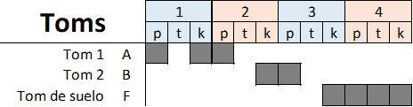

Fa# /Fa#sus4 (Sisus2) Sol# (sus4) Si ganara Padilla la corrupción no tendría silla. Si también Maldonado Algún sentido tendría el senado. Mi Sol Fa# Juan-Juan, vuelve a danzar (3v) Fa# /Fa#sus4 (Sisus2) Sol# (sus4) Ven Juan de Zapata,(2ª voz) en 3x4 danza mi gata, camelando al comunero sin arrastrar nada por el suelo. Mi Sol Fa# Juan-Juan, vuelve a danzar...y María Fa# .. ¡Ay! María Pacheco. Eterna musa de hombres sinceros Sol#.. Hazaña propia, exilio infame. Fa# .. Tajo vivo aún en Toledo. MI-> SOL -> Fa# (Bateria Dulzaina) RE La Si triunfa Juan Bravo Re La Mayor nobleza mejor hidalgo SIm Fa#m Desde Atienza a Berlanga Sol Re Cabalgaría Sancho Panza La SI Y Quijano y Dulcinea… Re#m España entera en celtiberia Do#m Su capital mirando al mar Rem sin más engaños ni postureos Do#m ni trajes nuevos de indentidad Si que siempre venden lo que no tienen Do#M y ahogan a un pueblo y su verdad Si Aún Castilla se siente entera, Do#M siempre libre y COMUNERA…. Fa#(sus4), Sol#(sus4), Fa#(sus4), Mi, SI..(bateria) Solo Dulzainas Guitarra. Re#m Por qué condenan sin juzgar Do#m Maldita prensa ni puedo hablar Si No esperes juntas ni un capitán Do#M Pero no calles y empieza a andar. Mi Sol Fa# -> SI Juan-Juan, vuelve a danzar y María